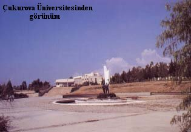

Haberler
Spor
 Galatasaray Başkanı Dursun Özbek'ten sürpriz bir hamle geldi. Kulüpler Birliği'nin başkanlığına soyunan Özbek, kulüpler arası atışmaları doğru bulmadığını ve bu konunun daha uygun şekillerde çözümlenmesi gerektiğini masaya yatırdı.
Galatasaray Başkanı Dursun Özbek'ten sürpriz bir hamle geldi. Kulüpler Birliği'nin başkanlığına soyunan Özbek, kulüpler arası atışmaları doğru bulmadığını ve bu konunun daha uygun şekillerde çözümlenmesi gerektiğini masaya yatırdı.
Gündem
Adana'da PKK/ KCK terör örgütü adına eylem yapıp, güvenlik güçlerine molotof kokteyli atan 5 kişi tutuklandı. Terörle Mücadele Şubesi ekipleri, 9 Ocak'ta merkez Yüreğir İlçesi'nin Anadolu, Dede Korkut ve 19 Mayıs Mahallesi ile ara sokaklarında toplanıp, korsan gösteri düzenleyen PKK/KCK yandaşlarına müdahale etti.
Son Dakika
Sultanahmet Meydanı'nda saat 10.20'de çok şiddetli bir patlama meydana geldi. Olay yerine ambulans, polis ve itfaiye araçları sevk edildi. Bölgede olağanüstü güvenlik önlemleri alındı, tramvay seferleri durdu.
ADANA'DA EĞİTİM
EĞİTİM
Çukurova yöresinde eğitim ve öğretimle ilgili yapılan araştırmalar insanlık tarihi kadar eskidir. En eski yazılı kaynak Hititlere kadar gitmektedir. Yörede yaşayan her medeniyet kendilerinden önceki medeniyetlerin etkisi altında kalarak kendilerine özgü bir medeniyet yaratmıştır, bu durum onların eğitimlerine etki etmiştir. M.S.7. yüzyılda Adana'ya İslam medeniyeti hakim olmuş, buralara boylar halinde Türk göçerleri yerleştirilmiştir. Bunlar yerleşik düzende olmadıkları için eğitimle ilgili hiçbir yazılı belgeye rastlanmamıştır. Ancak M.S. 1500 yıllarında Ramazan oğlu Beyliği'nin kurulması ile birlikte bu konuda yazılı belgeler mevcuttur. Bu dönemde Çukurova'yı ziyaret eden Evliya Çelebi Seyahatnamesi'nde şöyle demektedir: Adana'da mescitler ve 22 medrese ile iki Dar'ül-Hadis ve bir Dar'ül-Kurra vardır. Bunların uleması çoktur ve halkı sünnet ehli olup,müsalihtir. Kırk iki mektepte çocuklar ve yavrular alfabe okurlar. 1839 yılındaki Tanzimatın ilanına gelinceye kadar okullarda Hadis, Kuran ve temel dini bilgiler verilmekte idi. Bu tarihten sonra dini okulların yanında Avrupai okullar ve azınlık okulları da açılmıştır.
20. yüzyılın başında Çukurova'da 150 ilk ve orta dereceli okul, bir erkek lisesi, bir Hamidiye Sanayi Mektebi(Sanat Okulu), bir Erkek Öğretmen Okulu, azınlıklara ait iki İdari Rüştiye, iki Rüştiye, bir Cizvit Fransız Rervavsiye, Saimbeyli'de lise düzeyinde eğitim veren bir Amerikan Kız Koleji, Adana merkezde Amerikan Kız Koleji, Kadirli'de İspanyol Cizvit misyonerlerine ait bir okul, Ermeni kız çocuklarının bakımı için "Derrileytan" bulunmaktadır
Cumhuriyetin kurulması ve 1924 yılında Tevhid-i Tedrisat kanununun çıkarılması ile ildeki eğitim kurumlarının tekrar düzenlenmesi yapılmıştır. Yeni harflerin kabulü ile eğitimde büyük bir atılım gerçekleşmiştir. Her kademede okullar açılırken okuma yazma bilmeyen kadın ve erkekleri okur-yazar hale getirmek için eitim seferberliği başlamıştır. Binlerce kişi bu kurslardan geçerek okur-yazar belgesi almışlardır. Okuma seferberliğinde öğretmenlerin yanısıra "askerde okuma-yazma öğrenen kişi" olan eğitimlerden de faydalanılmıştır. İlde okur-yazarlık oranı 1927'de %7.9, 1950'de %30.6, 1975'te %65.7, 1995'te % 76.8'e ulaşmıştır.Cumhuriyet'in kurulduğu yıllarda 185 adet yeni ilkokul açılmıştır. Aynı yıllarda 1 Erkek Lisesi, Kız ve Erkek Öğretmen okulu, 1 Sanayi Mektebi(Sanat okulu), Ticaret Okulu, Ziraat Okulu bulunmaktadır.
Cumhuriyet'in 75.yılında Adana'da toplam çşitli kademede 1136 adet okul bulunmaktadır. Bunların 472'si şehir merkezlerinde, 664'ü köylerdedir. Bu okullarda okuyan toplam öğrenci sayısı 368.925'tir. Bunun 316.339'u şehir merkezinde, 52.587'si köylerde eğitim öğretim görmektedir. Öğretmen sayısı ise 11.671 olup, bunun 9.780'i şehir merkezlerinde, 1.891'i köylerdedir. Derslik sayısı 6.577 olup, bunun 4.644'ü şehir merkezlerinde, 1.933'ü köylerdedir.